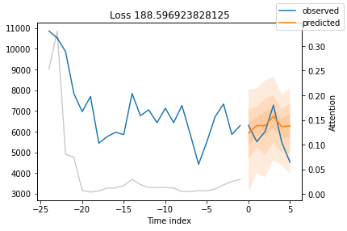
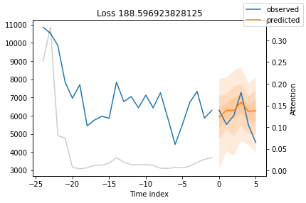
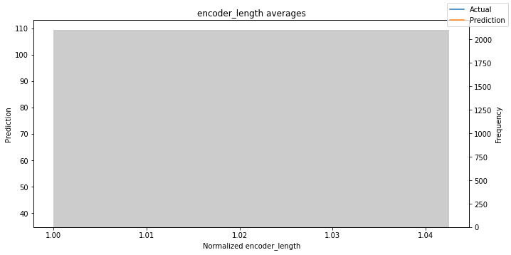
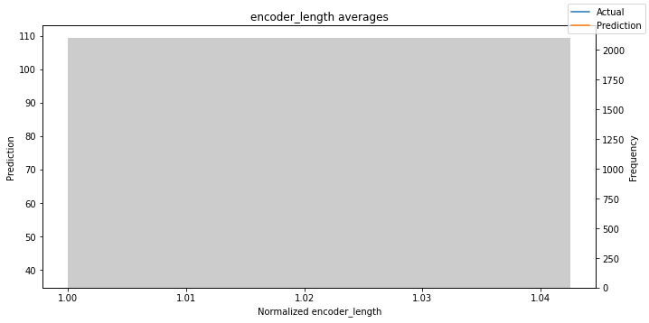
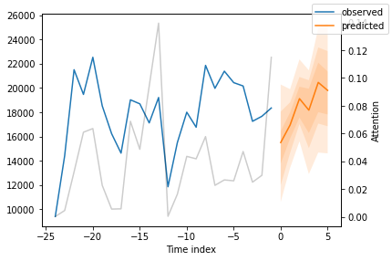
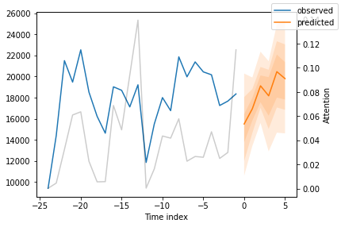

Demand forecasting with the Temporal Fusion Transformer#
In this tutorial, we will train the class pytorch_forecasting.models.temporal_fusion_transformer.TemporalFusionTransformer on a very small dataset to demonstrate that it even does a good job on only 20k samples. Generally speaking, it is a large model and will therefore perform much better with more data.
Our example is a demand forecast from the Stallion kaggle competition.
import os
import warnings
warnings.filterwarnings("ignore") # avoid printing out absolute paths
import copy
from pathlib import Path
import warnings
import numpy as np
import pandas as pd
import pytorch_lightning as pl
from pytorch_lightning.callbacks import EarlyStopping, LearningRateMonitor
from pytorch_lightning.loggers import TensorBoardLogger
import torch
from pytorch_forecasting import Baseline, TemporalFusionTransformer, TimeSeriesDataSet
from pytorch_forecasting.data import GroupNormalizer
from pytorch_forecasting.metrics import SMAPE, PoissonLoss, QuantileLoss
from pytorch_forecasting.models.temporal_fusion_transformer.tuning import optimize_hyperparameters
Load data#
First, we need to transform our time series into a pandas dataframe where each row can be identified with a time step and a time series. Fortunately, most datasets are already in this format. For this tutorial, we will use the Stallion dataset from Kaggle describing sales of various beverages. Our task is to make a six-month forecast of the sold volume by stock keeping units (SKU), that is products, sold by an agency, that is a store. There are about 21 000 monthly historic sales records. In addition to historic sales we have information about the sales price, the location of the agency, special days such as holidays, and volume sold in the entire industry.
The dataset is already in the correct format but misses some important features. Most importantly, we need to add a time index that is incremented by one for each time step. Further, it is beneficial to add date features, which in this case means extracting the month from the date record.
from pytorch_forecasting.data.examples import get_stallion_data
data = get_stallion_data()
# add time index
data["time_idx"] = data["date"].dt.year * 12 + data["date"].dt.month
data["time_idx"] -= data["time_idx"].min()
# add additional features
data["month"] = data.date.dt.month.astype(str).astype("category") # categories have be strings
data["log_volume"] = np.log(data.volume + 1e-8)
data["avg_volume_by_sku"] = data.groupby(["time_idx", "sku"], observed=True).volume.transform("mean")
data["avg_volume_by_agency"] = data.groupby(["time_idx", "agency"], observed=True).volume.transform("mean")
# we want to encode special days as one variable and thus need to first reverse one-hot encoding
special_days = [
"easter_day",
"good_friday",
"new_year",
"christmas",
"labor_day",
"independence_day",
"revolution_day_memorial",
"regional_games",
"fifa_u_17_world_cup",
"football_gold_cup",
"beer_capital",
"music_fest",
]
data[special_days] = data[special_days].apply(lambda x: x.map({0: "-", 1: x.name})).astype("category")
data.sample(10, random_state=521)
| agency | sku | volume | date | industry_volume | soda_volume | avg_max_temp | price_regular | price_actual | discount | ... | football_gold_cup | beer_capital | music_fest | discount_in_percent | timeseries | time_idx | month | log_volume | avg_volume_by_sku | avg_volume_by_agency | |
|---|---|---|---|---|---|---|---|---|---|---|---|---|---|---|---|---|---|---|---|---|---|
| 291 | Agency_25 | SKU_03 | 0.5076 | 2013-01-01 | 492612703 | 718394219 | 25.845238 | 1264.162234 | 1152.473405 | 111.688829 | ... | - | - | - | 8.835008 | 228 | 0 | 1 | -0.678062 | 1225.306376 | 99.650400 |
| 871 | Agency_29 | SKU_02 | 8.7480 | 2015-01-01 | 498567142 | 762225057 | 27.584615 | 1316.098485 | 1296.804924 | 19.293561 | ... | - | - | - | 1.465966 | 177 | 24 | 1 | 2.168825 | 1634.434615 | 11.397086 |
| 19532 | Agency_47 | SKU_01 | 4.9680 | 2013-09-01 | 454252482 | 789624076 | 30.665957 | 1269.250000 | 1266.490490 | 2.759510 | ... | - | - | - | 0.217413 | 322 | 8 | 9 | 1.603017 | 2625.472644 | 48.295650 |
| 2089 | Agency_53 | SKU_07 | 21.6825 | 2013-10-01 | 480693900 | 791658684 | 29.197727 | 1193.842373 | 1128.124395 | 65.717978 | ... | - | beer_capital | - | 5.504745 | 240 | 9 | 10 | 3.076505 | 38.529107 | 2511.035175 |
| 9755 | Agency_17 | SKU_02 | 960.5520 | 2015-03-01 | 515468092 | 871204688 | 23.608120 | 1338.334248 | 1232.128069 | 106.206179 | ... | - | - | music_fest | 7.935699 | 259 | 26 | 3 | 6.867508 | 2143.677462 | 396.022140 |
| 7561 | Agency_05 | SKU_03 | 1184.6535 | 2014-02-01 | 425528909 | 734443953 | 28.668254 | 1369.556376 | 1161.135214 | 208.421162 | ... | - | - | - | 15.218151 | 21 | 13 | 2 | 7.077206 | 1566.643589 | 1881.866367 |
| 19204 | Agency_11 | SKU_05 | 5.5593 | 2017-08-01 | 623319783 | 1049868815 | 31.915385 | 1922.486644 | 1651.307674 | 271.178970 | ... | - | - | - | 14.105636 | 17 | 55 | 8 | 1.715472 | 1385.225478 | 109.699200 |
| 8781 | Agency_48 | SKU_04 | 4275.1605 | 2013-03-01 | 509281531 | 892192092 | 26.767857 | 1761.258209 | 1546.059670 | 215.198539 | ... | - | - | music_fest | 12.218455 | 151 | 2 | 3 | 8.360577 | 1757.950603 | 1925.272108 |
| 2540 | Agency_07 | SKU_21 | 0.0000 | 2015-10-01 | 544203593 | 761469815 | 28.987755 | 0.000000 | 0.000000 | 0.000000 | ... | - | - | - | 0.000000 | 300 | 33 | 10 | -18.420681 | 0.000000 | 2418.719550 |
| 12084 | Agency_21 | SKU_03 | 46.3608 | 2017-04-01 | 589969396 | 940912941 | 32.478910 | 1675.922116 | 1413.571789 | 262.350327 | ... | - | - | - | 15.654088 | 181 | 51 | 4 | 3.836454 | 2034.293024 | 109.381800 |
10 rows × 31 columns
data.describe()
| volume | industry_volume | soda_volume | avg_max_temp | price_regular | price_actual | discount | avg_population_2017 | avg_yearly_household_income_2017 | discount_in_percent | timeseries | time_idx | log_volume | avg_volume_by_sku | avg_volume_by_agency | |
|---|---|---|---|---|---|---|---|---|---|---|---|---|---|---|---|
| count | 21000.000000 | 2.100000e+04 | 2.100000e+04 | 21000.000000 | 21000.000000 | 21000.000000 | 21000.000000 | 2.100000e+04 | 21000.000000 | 21000.000000 | 21000.00000 | 21000.000000 | 21000.000000 | 21000.000000 | 21000.000000 |
| mean | 1492.403982 | 5.439214e+08 | 8.512000e+08 | 28.612404 | 1451.536344 | 1267.347450 | 184.374146 | 1.045065e+06 | 151073.494286 | 10.574884 | 174.50000 | 29.500000 | 2.464118 | 1492.403982 | 1492.403982 |
| std | 2711.496882 | 6.288022e+07 | 7.824340e+07 | 3.972833 | 683.362417 | 587.757323 | 257.469968 | 9.291926e+05 | 50409.593114 | 9.590813 | 101.03829 | 17.318515 | 8.178218 | 1051.790829 | 1328.239698 |
| min | 0.000000 | 4.130518e+08 | 6.964015e+08 | 16.731034 | 0.000000 | -3121.690141 | 0.000000 | 1.227100e+04 | 90240.000000 | 0.000000 | 0.00000 | 0.000000 | -18.420681 | 0.000000 | 0.000000 |
| 25% | 8.272388 | 5.090553e+08 | 7.890880e+08 | 25.374816 | 1311.547158 | 1178.365653 | 54.935108 | 6.018900e+04 | 110057.000000 | 3.749628 | 87.00000 | 14.750000 | 2.112923 | 932.285496 | 113.420250 |
| 50% | 158.436000 | 5.512000e+08 | 8.649196e+08 | 28.479272 | 1495.174592 | 1324.695705 | 138.307225 | 1.232242e+06 | 131411.000000 | 8.948990 | 174.50000 | 29.500000 | 5.065351 | 1402.305264 | 1730.529771 |
| 75% | 1774.793475 | 5.893715e+08 | 9.005551e+08 | 31.568405 | 1725.652080 | 1517.311427 | 272.298630 | 1.729177e+06 | 206553.000000 | 15.647058 | 262.00000 | 44.250000 | 7.481439 | 2195.362302 | 2595.316500 |
| max | 22526.610000 | 6.700157e+08 | 1.049869e+09 | 45.290476 | 19166.625000 | 4925.404000 | 19166.625000 | 3.137874e+06 | 247220.000000 | 226.740147 | 349.00000 | 59.000000 | 10.022453 | 4332.363750 | 5884.717375 |
Create dataset and dataloaders#
The next step is to convert the dataframe into a PyTorch Forecasting the class pytorch_forecasting.data.timeseries.TimeSeriesDataSet. Apart from telling the dataset which features are categorical vs continuous and which are static vs varying in time, we also have to decide how we normalise the data. Here, we standard scale each time series separately and indicate that values are always positive. Generally, the class pytorch_forecasting.data.encoders.EncoderNormalizer, that scales dynamically on each encoder sequence as you train, is preferred to avoid look-ahead bias induced by normalisation. However, you might accept look-ahead bias if you are having troubles to find a reasonably stable normalisation, for example, because there are a lot of zeros in your data. Or you expect a more stable normalization in inference. In the later case, you ensure that you do not learn “weird” jumps that will not be present when running inference, thus training on a more realistic data set.
We also choose to use the last six months as a validation set.
max_prediction_length = 6
max_encoder_length = 24
training_cutoff = data["time_idx"].max() - max_prediction_length
training = TimeSeriesDataSet(
data[lambda x: x.time_idx <= training_cutoff],
time_idx="time_idx",
target="volume",
group_ids=["agency", "sku"],
min_encoder_length=max_encoder_length // 2, # keep encoder length long (as it is in the validation set)
max_encoder_length=max_encoder_length,
min_prediction_length=1,
max_prediction_length=max_prediction_length,
static_categoricals=["agency", "sku"],
static_reals=["avg_population_2017", "avg_yearly_household_income_2017"],
time_varying_known_categoricals=["special_days", "month"],
variable_groups={"special_days": special_days}, # group of categorical variables can be treated as one variable
time_varying_known_reals=["time_idx", "price_regular", "discount_in_percent"],
time_varying_unknown_categoricals=[],
time_varying_unknown_reals=[
"volume",
"log_volume",
"industry_volume",
"soda_volume",
"avg_max_temp",
"avg_volume_by_agency",
"avg_volume_by_sku",
],
target_normalizer=GroupNormalizer(
groups=["agency", "sku"], transformation="softplus"
), # use softplus and normalize by group
add_relative_time_idx=True,
add_target_scales=True,
add_encoder_length=True,
)
# create validation set (predict=True) which means to predict the last max_prediction_length points in time
# for each series
validation = TimeSeriesDataSet.from_dataset(training, data, predict=True, stop_randomization=True)
# create dataloaders for model
batch_size = 128 # set this between 32 to 128
train_dataloader = training.to_dataloader(train=True, batch_size=batch_size, num_workers=0)
val_dataloader = validation.to_dataloader(train=False, batch_size=batch_size * 10, num_workers=0)
Create baseline model#
# calculate baseline mean absolute error, i.e. predict next value as the last available value from the history
actuals = torch.cat([y for x, (y, weight) in iter(val_dataloader)])
baseline_predictions = Baseline().predict(val_dataloader)
(actuals - baseline_predictions).abs().mean().item()
293.0088195800781
Train the Temporal Fusion Transformer#
Find optimal learning rate#
Prior to training, you can identify the optimal learning rate with the PyTorch Lightning learning rate finder.
# configure network and trainer
pl.seed_everything(42)
trainer = pl.Trainer(
gpus=0,
# clipping gradients is a hyperparameter and important to prevent divergance
# of the gradient for recurrent neural networks
gradient_clip_val=0.1,
)
tft = TemporalFusionTransformer.from_dataset(
training,
# not meaningful for finding the learning rate but otherwise very important
learning_rate=0.03,
hidden_size=16, # most important hyperparameter apart from learning rate
# number of attention heads. Set to up to 4 for large datasets
attention_head_size=1,
dropout=0.1, # between 0.1 and 0.3 are good values
hidden_continuous_size=8, # set to <= hidden_size
output_size=7, # 7 quantiles by default
loss=QuantileLoss(),
# reduce learning rate if no improvement in validation loss after x epochs
reduce_on_plateau_patience=4,
)
print(f"Number of parameters in network: {tft.size()/1e3:.1f}k")
Global seed set to 42
GPU available: True, used: False
TPU available: False, using: 0 TPU cores
IPU available: False, using: 0 IPUs
Number of parameters in network: 29.7k
# find optimal learning rate
res = trainer.tuner.lr_find(
tft,
train_dataloader=train_dataloader,
val_dataloaders=val_dataloader,
max_lr=10.0,
min_lr=1e-6,
)
print(f"suggested learning rate: {res.suggestion()}")
fig = res.plot(show=True, suggest=True)
fig.show()
/ssd003/projects/aieng/public/forecasting_unified/lib/python3.8/site-packages/pytorch_lightning/trainer/trainer.py:1079: LightningDeprecationWarning: `trainer.tune(train_dataloader)` is deprecated in v1.4 and will be removed in v1.6. Use `trainer.tune(train_dataloaders)` instead. HINT: added 's'
rank_zero_deprecation(
Set SLURM handle signals.
Global seed set to 42
Restoring states from the checkpoint path at /scratch/ssd002/home/jewtay/lr_find_temp_model_6e4c9dc6-1fec-4d6f-a919-9059b50ba81b.ckpt
suggested learning rate: 5.888436553555889e-06

For thepytorch_forecasting.models.temporal_fusion_transformer.TemporalFusionTransformer, the optimal learning rate seems to be slightly lower than the suggested one. Further, we do not directly want to use the suggested learning rate because PyTorch Lightning sometimes can get confused by the noise at lower learning rates and suggests rates far too low. Manual control is essential. We decide to pick 0.03 as learning rate.
Train model#
If you have troubles training the model and get an error AttributeError: module 'tensorflow._api.v2.io.gfile' has no attribute 'get_filesystem', consider either uninstalling tensorflow or first execute
import tensorflow as tf
import tensorboard as tb
tf.io.gfile = tb.compat.tensorflow_stub.io.gfile
```.
# configure network and trainer
early_stop_callback = EarlyStopping(monitor="val_loss", min_delta=1e-4, patience=10, verbose=False, mode="min")
lr_logger = LearningRateMonitor() # log the learning rate
logger = TensorBoardLogger("lightning_logs") # logging results to a tensorboard
trainer = pl.Trainer(
max_epochs=30,
gpus=0,
weights_summary="top",
gradient_clip_val=0.1,
limit_train_batches=30, # coment in for training, running valiation every 30 batches
# fast_dev_run=True, # comment in to check that networkor dataset has no serious bugs
callbacks=[lr_logger, early_stop_callback],
logger=logger,
)
tft = TemporalFusionTransformer.from_dataset(
training,
learning_rate=0.03,
hidden_size=16,
attention_head_size=1,
dropout=0.1,
hidden_continuous_size=8,
output_size=7, # 7 quantiles by default
loss=QuantileLoss(),
log_interval=10, # uncomment for learning rate finder and otherwise, e.g. to 10 for logging every 10 batches
reduce_on_plateau_patience=4,
)
print(f"Number of parameters in network: {tft.size()/1e3:.1f}k")
GPU available: True, used: False
TPU available: False, using: 0 TPU cores
IPU available: False, using: 0 IPUs
Number of parameters in network: 29.7k
Training takes a couple of minutes on my Macbook but for larger networks and datasets, it can take hours. The training speed is here mostly determined by overhead and choosing a larger batch_size or hidden_size (i.e. network size) does not slow does training linearly making training on large datasets feasible. During training, we can monitor the tensorboard which can be spun up with tensorboard --logdir=lightning_logs. For example, we can monitor examples predictions on the training and validation set.
# fit network
trainer.fit(
tft,
train_dataloader=train_dataloader,
val_dataloaders=val_dataloader,
)
/ssd003/projects/aieng/public/forecasting_unified/lib/python3.8/site-packages/pytorch_lightning/trainer/trainer.py:735: LightningDeprecationWarning: `trainer.fit(train_dataloader)` is deprecated in v1.4 and will be removed in v1.6. Use `trainer.fit(train_dataloaders)` instead. HINT: added 's'
rank_zero_deprecation(
Set SLURM handle signals.
| Name | Type | Params
----------------------------------------------------------------------------------------
0 | loss | QuantileLoss | 0
1 | logging_metrics | ModuleList | 0
2 | input_embeddings | MultiEmbedding | 1.3 K
3 | prescalers | ModuleDict | 256
4 | static_variable_selection | VariableSelectionNetwork | 3.4 K
5 | encoder_variable_selection | VariableSelectionNetwork | 8.0 K
6 | decoder_variable_selection | VariableSelectionNetwork | 2.7 K
7 | static_context_variable_selection | GatedResidualNetwork | 1.1 K
8 | static_context_initial_hidden_lstm | GatedResidualNetwork | 1.1 K
9 | static_context_initial_cell_lstm | GatedResidualNetwork | 1.1 K
10 | static_context_enrichment | GatedResidualNetwork | 1.1 K
11 | lstm_encoder | LSTM | 2.2 K
12 | lstm_decoder | LSTM | 2.2 K
13 | post_lstm_gate_encoder | GatedLinearUnit | 544
14 | post_lstm_add_norm_encoder | AddNorm | 32
15 | static_enrichment | GatedResidualNetwork | 1.4 K
16 | multihead_attn | InterpretableMultiHeadAttention | 1.1 K
17 | post_attn_gate_norm | GateAddNorm | 576
18 | pos_wise_ff | GatedResidualNetwork | 1.1 K
19 | pre_output_gate_norm | GateAddNorm | 576
20 | output_layer | Linear | 119
----------------------------------------------------------------------------------------
29.7 K Trainable params
0 Non-trainable params
29.7 K Total params
0.119 Total estimated model params size (MB)
Global seed set to 42
Hyperparameter tuning#
Evaluate performance#
PyTorch Lightning automatically checkpoints training and thus, we can easily retrieve the best model and load it.
# load the best model according to the validation loss
# (given that we use early stopping, this is not necessarily the last epoch)
best_model_path = trainer.checkpoint_callback.best_model_path
best_tft = TemporalFusionTransformer.load_from_checkpoint(best_model_path)
After training, we can make predictions with the method pytorch_forecasting.models.base_model.BaseModel.predict. The method allows very fine-grained control over what it returns so that, for example, you can easily match predictions to your pandas dataframe. See its documentation for details. We evaluate the metrics on the validation dataset and a couple of examples to see how well the model is doing. Given that we work with only 21 000 samples the results are very reassuring and can compete with results by a gradient booster. We also perform better than the baseline model. Given the noisy data, this is not trivial.
# calcualte mean absolute error on validation set
actuals = torch.cat([y[0] for x, y in iter(val_dataloader)])
predictions = best_tft.predict(val_dataloader)
(actuals - predictions).abs().mean()
tensor(271.7230)
We can now also look at sample predictions directly which we plot with the method pytorch_forecasting.models.base_model.BaseModel.plot_prediction. As you can see from the figures below, forecasts look rather accurate. If you wonder, the grey lines denote the amount of attention the model pays to different points in time when making the prediction. This is a special feature of the Temporal Fusion Transformer.
# raw predictions are a dictionary from which all kind of information including quantiles can be extracted
raw_predictions, x = best_tft.predict(val_dataloader, mode="raw", return_x=True)
for idx in range(10): # plot 10 examples
best_tft.plot_prediction(x, raw_predictions, idx=idx, add_loss_to_title=True);
 

Worst performers#
Looking at the worst performers, for example in terms of the classpytorch_forecasting.metrics.SMAPE, gives us an idea where the model has issues with forecasting reliably. These examples can provide important pointers about how to improve the model. This kind of actuals vs predictions plots are available to all models. Of course, it is also sensible to employ additional metrics, such as MASE, defined in the :py:mod:~pytorch_forecasting.metrics module. However, for the sake of demonstration, we only use :py:class:~pytorch_forecasting.metrics.SMAPE here.
# calcualte metric by which to display
predictions = best_tft.predict(val_dataloader)
mean_losses = SMAPE(reduction="none")(predictions, actuals).mean(1)
indices = mean_losses.argsort(descending=True) # sort losses
for idx in range(10): # plot 10 examples
best_tft.plot_prediction(
x, raw_predictions, idx=indices[idx], add_loss_to_title=SMAPE(quantiles=best_tft.loss.quantiles)
);


Actuals vs predictions by variables#
predictions, x = best_tft.predict(val_dataloader, return_x=True)
predictions_vs_actuals = best_tft.calculate_prediction_actual_by_variable(x, predictions)
best_tft.plot_prediction_actual_by_variable(predictions_vs_actuals);
 

Predict on selected data#
To predict on a subset of data we can filter the subsequences in a dataset using the method pytorch_forecasting.data.timeseries.TimeSeriesDataSet.filter method. Here we predict for the subsequence in the training dataset that maps to the group ids “Agency_01” and “SKU_01” and whose first predicted value corresponds to the time index “15”. We output all seven quantiles. This means we expect a tensor of shape 1 x n_timesteps x n_quantiles = 1 x 6 x 7 as we predict for a single subsequence six time steps ahead and 7 quantiles for each time step.
best_tft.predict(
training.filter(lambda x: (x.agency == "Agency_01") & (x.sku == "SKU_01") & (x.time_idx_first_prediction == 15)),
mode="quantiles",
)
tensor([[[ 87.1830, 110.6064, 127.7628, 145.3178, 165.5041, 182.8347, 213.5448],
[ 53.9288, 80.0576, 94.3104, 113.3253, 133.8607, 152.9938, 188.1326],
[ 48.2099, 72.1758, 85.6514, 101.1941, 119.5774, 138.5667, 174.2507],
[ 50.7282, 85.2085, 98.7025, 112.9578, 133.0831, 152.9954, 188.2846],
[ 62.5154, 91.1128, 102.8401, 116.8755, 134.7699, 153.5502, 188.5885],
[ 49.8006, 75.4659, 91.2730, 104.2535, 124.6483, 144.5271, 178.1142]]])
Of course, we can also plot this prediction readily:
raw_prediction, x = best_tft.predict(
training.filter(lambda x: (x.agency == "Agency_01") & (x.sku == "SKU_01") & (x.time_idx_first_prediction == 15)),
mode="raw",
return_x=True,
)
best_tft.plot_prediction(x, raw_prediction, idx=0);
Predict on new data#
Because we have covariates in the dataset, predicting on new data requires us to define the known covariates upfront.
# select last 24 months from data (max_encoder_length is 24)
encoder_data = data[lambda x: x.time_idx > x.time_idx.max() - max_encoder_length]
# select last known data point and create decoder data from it by repeating it and incrementing the month
# in a real world dataset, we should not just forward fill the covariates but specify them to account
# for changes in special days and prices (which you absolutely should do but we are too lazy here)
last_data = data[lambda x: x.time_idx == x.time_idx.max()]
decoder_data = pd.concat(
[last_data.assign(date=lambda x: x.date + pd.offsets.MonthBegin(i)) for i in range(1, max_prediction_length + 1)],
ignore_index=True,
)
# add time index consistent with "data"
decoder_data["time_idx"] = decoder_data["date"].dt.year * 12 + decoder_data["date"].dt.month
decoder_data["time_idx"] += encoder_data["time_idx"].max() + 1 - decoder_data["time_idx"].min()
# adjust additional time feature(s)
decoder_data["month"] = decoder_data.date.dt.month.astype(str).astype("category") # categories have be strings
# combine encoder and decoder data
new_prediction_data = pd.concat([encoder_data, decoder_data], ignore_index=True)
new_raw_predictions, new_x = best_tft.predict(new_prediction_data, mode="raw", return_x=True)
for idx in range(10): # plot 10 examples
best_tft.plot_prediction(new_x, new_raw_predictions, idx=idx, show_future_observed=False);

 

Interpret model#
Variable importances#
The model has inbuilt interpretation capabilities due to how its architecture is build. Let’s see how that looks. We first calculate interpretations with the method
pytorch_forecasting.models.temporal_fusion_transformer.TemporalFusionTransformer.interpret_output and plot them subsequently with the method pytorch_forecasting.models.temporal_fusion_transformer.TemporalFusionTransformer.plot_interpretation.
interpretation = best_tft.interpret_output(raw_predictions, reduction="sum")
best_tft.plot_interpretation(interpretation)
{'attention': <Figure size 432x288 with 1 Axes>,
'static_variables': <Figure size 504x270 with 1 Axes>,
'encoder_variables': <Figure size 504x378 with 1 Axes>,
'decoder_variables': <Figure size 504x252 with 1 Axes>}
Unsurprisingly, the past observed volume features as the top variable in the encoder and price related variables are among the top predictors in the decoder.
The general attention patterns seems to be that more recent observations are more important and older ones. This confirms intuition. The average attention is often not very useful - looking at the attention by example is more insightful because patterns are not averaged out.